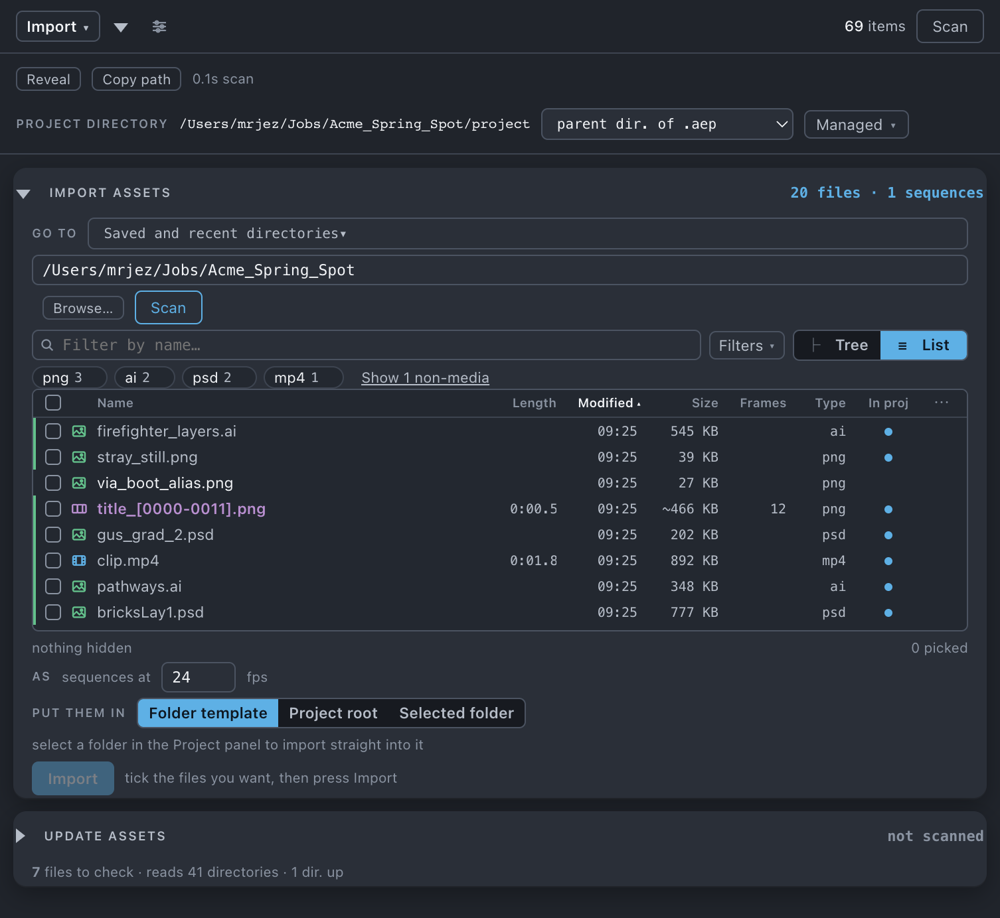

Import assets
Browses a directory and shows you what is in it — sequences as one row each, versions of one asset as one row each, and which version the project already holds — then imports what you tick.
Use it when
- A delivery has arrived and you want to see what is in it before anything enters the project.
- You want only the files that landed since yesterday, not the whole folder again.
- A four-hundred-frame sequence needs to come in as one item, at the right frame rate.
- You want what you import filed by your template on arrival instead of piling up in the project root.
- A batch belongs in one folder you already made by hand.
What it does
Reads a directory you name, all the way down, and lists what it found: video, stills, audio, image sequences collapsed to one row each, and everything else as an extension chip. Two columns are shown at rest — the name, and In proj, which says which version of that asset the project already holds. Length, modified date and size appear dimmed beside the name while you hover a row, and can be put back as columns from the ⋯ menu. Files that are versions of one asset — shot_010_comp_v04 through v07 — are one row: the newest on disk, with the older ones folded under it. You tick rows and press Import — and if you ask, what arrives is filed by the Project panel half of your template.
What it does not do: nothing on disk changes, so no file is copied, moved or renamed. It builds no thumbnails. And it reads nothing at all until you press Scan — a directory sitting in the field has not been touched.
Do it
- Press the Import tile. Nothing is read until you scan; the line at the top of the sheet says so, and the Import button at the top right stays grey until there is something ticked to import.
- Choose a directory, three ways into one store: Go to for somewhere you have been before, the path field to type or paste, or Browse…. The resting line says choose a directory · nothing is read until you scan.
- Press Scan. It counts as it goes — n directories · n files… — with no progress bar, because there is no total. Stop ends it, and a scan that was stopped or cut short says so under the table: stopped after n directories — partial listing.
- Narrow what you are looking at: the name box, Filters ▾, and the extension pills.
- Tick the rows you want — a folder's box ticks everything beneath it, collapsed or not, and shows part-ticked when only some of it is. Ticking a row the project already holds at an older version makes that row an update rather than a second import. Set the sequence frame rate and Put them in.
- Press the button at the top right. It reads what the plan is — Import 6 items, or Import 3 items · Update 1 file.
Scope. The scan is bounded by the directory you name: nothing above it is read, and everything below it is, however deep. What is selected in the Project panel matters only for the destination: a selected folder — or the folder of one selected comp — is what Put them in › where you are means, and it is targeted by id, so renaming that folder later cannot break the import.

What you'll see
| Option | What it means |
|---|---|
| Filter by name… | Filters as you type. It deliberately does not count toward the Filters badge — it is text you are already looking at. |
| Filters ▾ · Kind | All, Video, Seq, Stills, Audio. |
| Filters ▾ · Modified | Any time, Last 12 hours, Today, Last 24 hours, Last 3 days, Last 7 days, Last 14 days, Last 30 days, Last 90 days. Today and Last 24 hours are different questions and both are there. |
| Filters ▾ · Fold older versions | On by default. Older versions fold under the newest on disk, and the footer confesses what it folded — n older versions folded · n folders · show. |
| Filters ▾ · Version looks like | What counts as a version in a filename: v001, _001, or either — the same setting Update assets carries. It does not count toward the Filters badge and Clear all leaves it alone: it changes what the rows mean, not which of them you see. |
| Hide already imported | Off by default: a file the project already has is marked, not hidden. Tick this and those rows go. |
| Show non-media types | Reveals the folded extension pills. It is a reveal, not a filter — a revealed type is still off until you press its pill. |
| The pill row | One chip per extension: the inventory of the directory and the type filter in one control. Over twelve, it offers Show n more. |
| Tree / List | Two views of the same rows; every column header is the sort control. Tree nests folders under the directory you scanned: a folder holding only one sub-folder is drawn as one row (project › aep), and ⌥-click on a folder folds or opens everything beneath it. Name and In proj are the only columns drawn by default — Length, Modified, Size, Missing, Frames, Type and Folder wait in the ⋯ menu. Columns shed on their own when the panel is narrow, cheapest information first, and a shed or List-only column is greyed with its reason. |
| In proj | Which version of this asset the project holds: ● v05 in amber when the project's copy is older than this row, ● v03 when it is this exact one, ● when the name carries no version, a dim ▾ when the project has none of them. The ▾ drops the family — every version newest first, tagged on disk · newest or in project · n comps, with its folder, date and size. Click one to pick it. |
| As sequences at [24] fps | The frame rate a sequence is interpreted at. Settable at import, and only at import, for a whole batch. |
| Put them in | The same question Duplicate asks. wherever fits this project (default) — the folder template if you have run Organize on this project, otherwise where you are, otherwise the top level; the line under it says which and why. where you are — the selected folder, or the folder of the one selected comp, named on the button; dim when nothing is selected. at the top level. the folder template — routed by the same classifier Organize uses, not a folder name you type. |
Notes it may raise, and what they mean:
- n hidden by filters, with a clear link, or nothing hidden. A filter that empties the list says so.
- n older versions folded · n folders · show — the fold, confessing. A folder holding nothing but older versions of a family folds with its contents, which is why folders are counted too.
- stopped after n directories — partial listing — a scan you stopped, under the table. The rows above it are real; the absence of a row is not an answer.
- n already in the project — importing again makes a second copy. — a warning, never a block. A second copy is legitimate.
- nothing here is media — open it to pick anyway — the pill row on a directory of documents.
- tick the files you want, then press Import, or n ticked, but hidden by the filters — clear them to import. The button is always drawn, and it says which zero it is.
- Refusals under the path field, in red: no directory given · that is not a full path — it must start with / · the whole disk is not a place to scan · every user, or every mounted volume — pick one inside it · nothing is there · that is a file, not a directory. And one in amber that is a warning, not a refusal: that is an entire volume — scanning it will take a while.
- In the Length column,
…means queued and—means measured but unknown. Sorting by Length suspends the measuring so rows do not reshuffle under the cursor.
Undo
One ⌘Z, named Toolbox import. A press that imports and updates in the same breath is still one ⌘Z — the repoints and the new items are in one group, so undo cannot take back half of it. Nothing on disk changes either way.
Watch out
Things you might not think to do
- Take an inventory of a handoff folder without importing anything. The pill row is a content census —
62 png · 60 exr · 4 wav— and hovering a row gives its length, date and size without turning a single column on. - Import only what arrived since yesterday. Filters ▾ → Modified: Last 24 hours, then tick Hide already imported.
- Import a version that is not the newest. Open the ▾ in In proj and click the one you want — a folded v05 imports as readily as the v07 it folded under.
- Find a version the fold has hidden. Type
v05in the name box: the search reaches through the fold and brings that row back out, drawn under the version it folded under. Only the name search reaches through — the other filters still remove the row.
Pairs with
Update assets, for footage the project already uses. Versions answers the same question from the other end — what the project is holding twice. Set up once is where the template that Folder template reads is edited. Organize files anything that came in some other way.